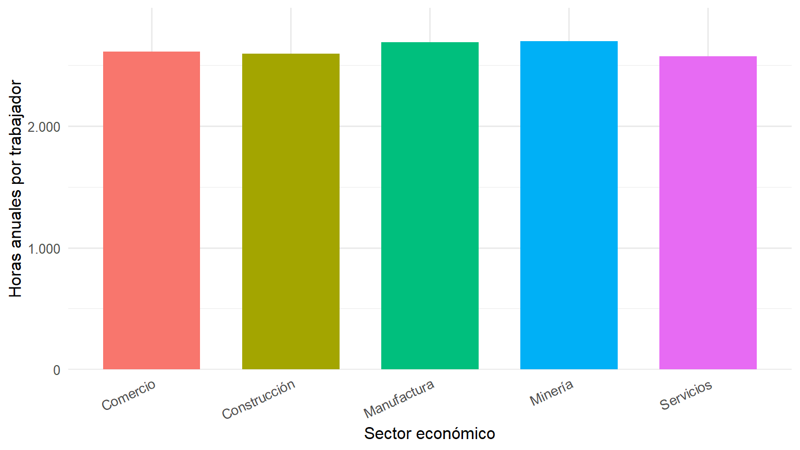
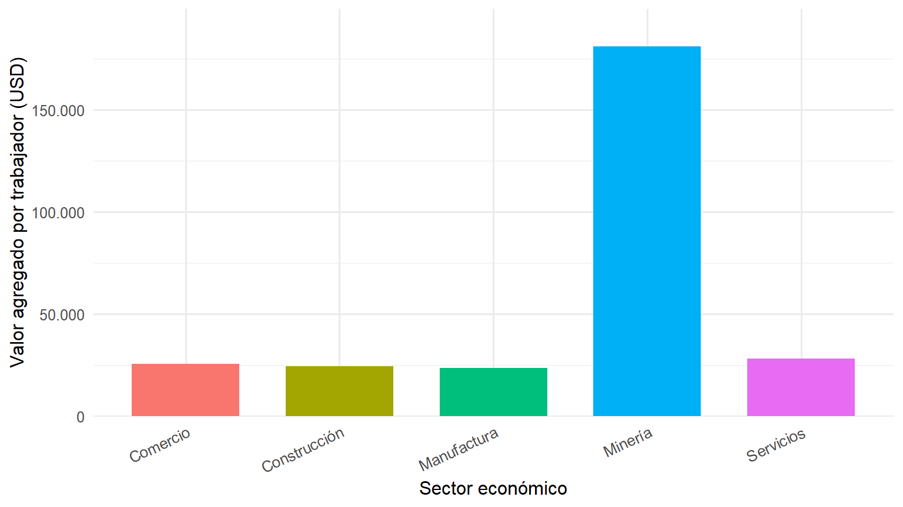
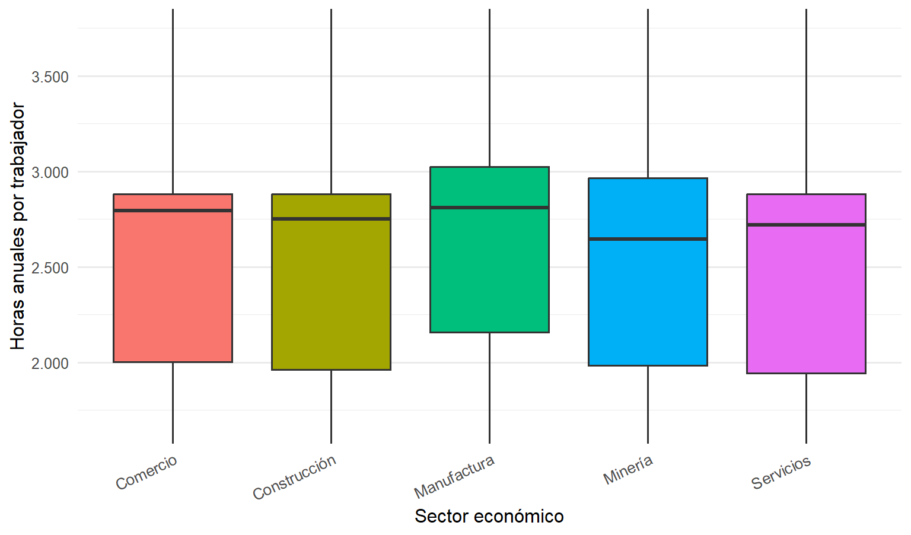
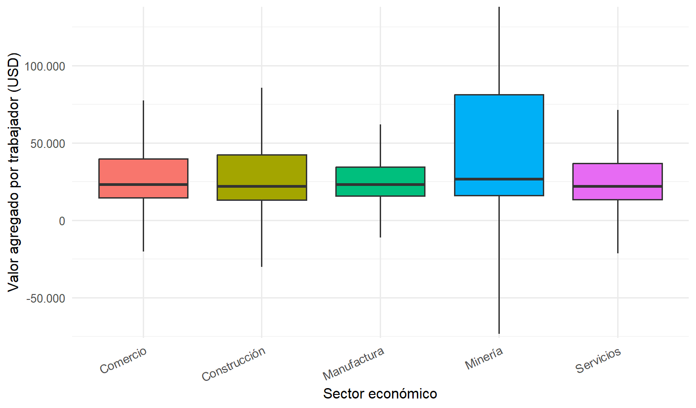

| Sector económico | Empresas | Porcentaje de la muestra (%) |
|---|---|---|
| Comercio | 1569 | 42,67 |
| Construcción | 208 | 5,66 |
| Manufactura | 718 | 19,53 |
| Minería | 104 | 2,83 |
| Servicios | 1078 | 29,32 |
4 Diagnóstico sectorial
4.1 Objetivo y alcance
Caracterizar las horas trabajadas y la productividad laboral de las empresas según su sector económico.
El análisis examina cinco sectores económicos: comercio, construcción, manufactura, minería y servicios. Para ello, se utilizan los microdatos procesados de la Encuesta Estructural Empresarial (ENESEM) 2019, elaborada por el Instituto Nacional de Estadística y Censos (INEC) del Ecuador.
La productividad laboral se mide mediante el valor agregado por persona ocupada, expresado en dólares estadounidenses. La intensidad del trabajo se aproxima mediante las horas anuales trabajadas por persona ocupada.
El diagnóstico permite identificar diferencias sectoriales, examinar la distribución de los indicadores entre empresas y reconocer posibles problemas y potencialidades productivas.
4.2 Preparación de los datos
Se trabaja con 3677 empresas que cuentan con información válida sobre horas trabajadas, valor agregado, personal ocupado, sector económico y factor de expansión.
El tratamiento conserva las observaciones con valor agregado negativo o igual a cero. Los indicadores sectoriales agregados se calculan como cocientes entre totales expandidos mediante el factor de expansión de ENESEM 2019.
4.3 Distribución de empresas por sector económico
La distribución de observaciones permite caracterizar la composición sectorial de la muestra y contextualizar las comparaciones posteriores.
El comercio concentra 1569 empresas, equivalentes al 42,7 % de los registros válidos.
Le siguen los servicios, con una participación del 29,3 %, mientras que la minería presenta la menor participación en el número de empresas observadas.
Esta distribución refleja diferencias en la composición sectorial de la muestra y resulta relevante para interpretar los indicadores productivos.
Nota: los porcentajes corresponden a las empresas observadas en la muestra y no representan participaciones expandidas del universo empresarial.
4.4 Horas trabajadas y productividad agregada
Para comparar el desempeño económico de los sectores se utilizan dos indicadores.
Las horas anuales trabajadas por persona ocupada se calculan mediante:
\[ H_s = \frac{\sum_{i \in s} h_i f_i} {\sum_{i \in s} n_i f_i} \]
La productividad laboral agregada se calcula como:
\[ P_s = \frac{\sum_{i \in s} VA_i f_i} {\sum_{i \in s} n_i f_i} \]
Donde:
- \(H_s\): horas anuales trabajadas por persona ocupada del sector \(s\).
- \(P_s\): valor agregado por persona ocupada del sector \(s\).
- \(h_i\): horas anuales trabajadas de la empresa \(i\).
- \(VA_i\): valor agregado de la empresa \(i\).
- \(n_i\): personal ocupado de la empresa \(i\).
- \(f_i\): factor de expansión correspondiente a la empresa \(i\).
Los indicadores se calculan mediante cocientes entre totales ponderados, evitando confundirlos con el promedio simple de los indicadores individuales de las empresas.
| Sector económico | Empresas | Horas anuales por trabajador | Productividad (USD/trabajador) |
|---|---|---|---|
| Comercio | 1569 | 2.611,4 | 25.589,60 |
| Construcción | 208 | 2.595,3 | 24.479,57 |
| Manufactura | 718 | 2.689,2 | 23.719,46 |
| Minería | 104 | 2.700,6 | 181.087,91 |
| Servicios | 1078 | 2.573,8 | 28.056,15 |
La minería registra la mayor productividad agregada, con USD 181.087,91 por trabajador, y también presenta el indicador más elevado de horas anuales por persona ocupada.
En contraste, los servicios registran la menor cantidad de horas trabajadas, con 2.573,8 horas anuales por trabajador.
Estas diferencias muestran que los niveles de productividad sectorial no siguen una relación uniforme con la cantidad de horas trabajadas.
No obstante, las diferencias de valor agregado por trabajador pueden responder también a factores como la intensidad de capital, la tecnología, la organización empresarial y la composición de las actividades productivas.
4.4.1 Consideración metodológica sobre las horas anuales
El indicador de horas por trabajador se construye a partir de la variable hanuales de ENESEM 2019, dividida para el personal ocupado registrado por la empresa.
Antes de comparar estos resultados con la jornada laboral legal ecuatoriana, es necesario verificar en la documentación metodológica del INEC la construcción exacta de hanuales, los tipos de horas incluidos y su relación con las categorías de personal ocupado.
Por tanto, las horas anuales por persona ocupada se interpretan como un indicador estadístico de utilización del trabajo y no como una medición directa de la jornada contractual de cada trabajador.
4.5 Comparación gráfica de las horas trabajadas
El siguiente gráfico permite visualizar las diferencias en el tiempo de trabajo entre sectores económicos.

Las horas anuales por trabajador presentan valores relativamente cercanos entre los cinco sectores.
La minería registra el valor más elevado, mientras que los servicios presentan el menor, con una diferencia de 126,8 horas al año.
Esta comparación describe diferencias sectoriales en la utilización del tiempo de trabajo, sin establecer sus causas.
4.6 Comparación gráfica de la productividad laboral
El valor agregado por persona ocupada permite examinar las diferencias en la productividad agregada entre sectores.

La productividad agregada de la minería destaca considerablemente frente a los demás sectores económicos.
Comercio, construcción, manufactura y servicios registran niveles mucho más próximos entre sí.
La marcada diferencia de productividad minera puede estar relacionada con la intensidad de capital, la escala de operaciones y las características específicas de la actividad económica.
Por consiguiente, una mayor productividad agregada no implica necesariamente una mayor eficiencia individual de los trabajadores.
4.7 Distribución de los indicadores entre empresas
Los indicadores agregados permiten caracterizar el desempeño sectorial, pero no muestran completamente las diferencias existentes entre las empresas de una misma actividad económica.
Para complementar el diagnóstico se calculan la mediana, la desviación estándar y los percentiles 25 y 75 de las horas trabajadas y de la productividad laboral individual.
A diferencia de los indicadores agregados anteriores, estas estadísticas describen las observaciones empresariales de la muestra sin aplicar ponderaciones.
Por ello, la mediana representa una empresa típica de la muestra y no debe confundirse con el cociente entre los totales ponderados de un sector.
| Sector | Indicador | Mediana | Desviación estándar | Percentil 25 | Percentil 75 |
|---|---|---|---|---|---|
| Comercio | Horas por trabajador | 2.795,3 | 501,2 | 2.002,0 | 2.880,0 |
| Comercio | Productividad (USD) | 23.102,2 | 76.303,5 | 14.597,3 | 39.791,2 |
| Construcción | Horas por trabajador | 2.751,1 | 541,5 | 1.961,2 | 2.880,0 |
| Construcción | Productividad (USD) | 21.738,3 | 122.504,8 | 12.945,8 | 42.333,9 |
| Manufactura | Horas por trabajador | 2.809,3 | 546,0 | 2.157,3 | 3.024,7 |
| Manufactura | Productividad (USD) | 23.099,2 | 34.862,4 | 15.740,4 | 34.298,6 |
| Minería | Horas por trabajador | 2.644,3 | 638,1 | 1.984,8 | 2.965,4 |
| Minería | Productividad (USD) | 26.678,3 | 1.150.126,7 | 15.963,5 | 81.327,8 |
| Servicios | Horas por trabajador | 2.718,7 | 524,5 | 1.942,6 | 2.880,0 |
| Servicios | Productividad (USD) | 21.731,4 | 652.812,1 | 13.481,0 | 36.833,3 |
Las medianas y los percentiles permiten identificar diferencias importantes entre las empresas de un mismo sector económico.
En minería, la mediana de productividad es de USD 26.678,3 por trabajador, un valor considerablemente inferior al indicador agregado sectorial.
Esta diferencia requiere una interpretación cuidadosa, dado que la mediana empresarial y la productividad calculada mediante totales ponderados representan medidas estadísticas distintas.
La desviación estándar complementa el análisis, aunque puede verse afectada por observaciones extremas, particularmente en actividades con empresas de gran escala.
4.8 Distribución de las horas trabajadas
Los diagramas de caja permiten examinar la dispersión, los valores centrales y las diferencias entre empresas de un mismo sector.

El diagrama permite observar que existen diferencias en la distribución de las horas anuales trabajadas entre las empresas de cada sector.
El sector Minería presenta la mayor amplitud entre los percentiles 25 y 75, lo que refleja una mayor dispersión central de las horas registradas por persona ocupada.
La visualización se limita al intervalo comprendido entre los percentiles globales 1 y 99 para facilitar su lectura.
Esta limitación es exclusivamente gráfica y no representa una eliminación de observaciones de los cálculos.
4.9 Distribución de la productividad laboral
La productividad empresarial puede presentar diferencias considerables incluso dentro de un mismo sector económico.
Para examinar esta heterogeneidad, se utiliza un segundo diagrama de caja.

La distribución de la productividad muestra diferencias entre empresas, incluso dentro de una misma actividad económica.
El sector Minería registra el mayor rango intercuartílico de productividad laboral.
Estas diferencias permiten comprender por qué los indicadores agregados pueden apartarse considerablemente de los valores observados en una empresa típica.
Asimismo, reflejan la importancia de considerar la heterogeneidad empresarial antes de formular conclusiones generales sobre la productividad de cada sector.
Nota: el gráfico utiliza una ventana visual comprendida entre los percentiles globales 1 y 95 para facilitar la comparación. Esta decisión no elimina registros ni modifica los resultados calculados. Los valores negativos o iguales a cero de productividad se conservaron cuando cumplían los criterios de validez definidos.
4.10 Síntesis del diagnóstico sectorial
El diagnóstico sectorial de ENESEM 2019 evidencia diferencias relevantes en las horas anuales trabajadas y la productividad laboral de las empresas ecuatorianas.
La minería presenta el mayor nivel agregado de valor agregado por persona ocupada, mientras que las actividades de comercio, construcción, manufactura y servicios registran valores considerablemente inferiores.
Sin embargo, las diferencias de productividad entre sectores no siguen una correspondencia uniforme con las horas trabajadas.
Adicionalmente, el análisis de las distribuciones individuales evidencia una heterogeneidad importante dentro de cada sector, particularmente en los indicadores de productividad.
Estos resultados permiten identificar posibles diferencias productivas que serán examinadas posteriormente en los apartados de diagnóstico territorial, problemas y potencialidades, y evidencia correlacional.
En términos metodológicos, las comparaciones presentadas son descriptivas y no permiten atribuir las diferencias de productividad exclusivamente a la duración del tiempo de trabajo.
Tampoco constituyen evidencia causal de que aumentar o reducir las horas laborales produzca cambios en el valor agregado generado por las empresas.
Fuente de las tablas y gráficos: Elaboración propia a partir de los microdatos de ENESEM 2019, Instituto Nacional de Estadística y Censos (INEC), Ecuador.